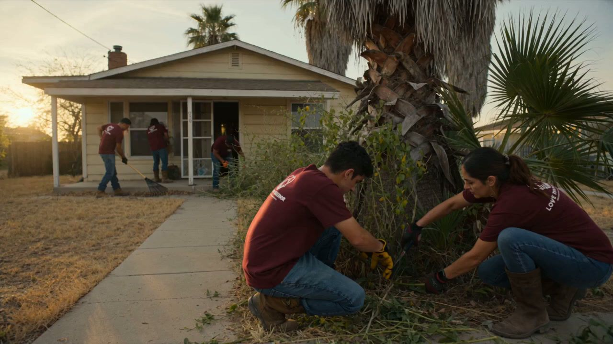

Our programs
Our programs
One neighbor, one heart, one home at a time.
Our programs serve the physical, emotional and spiritual needs of our seniors. Each one is rooted in faith, compassion and community.



Restore, Renew & Rebuild
Many seniors in Cameron County live in homes that have fallen into disrepair. Our teams provide hands-on help with repairs, painting and clean-up so elderly residents can live safely and with dignity again.
- Restore: junk removal, yard cleanups and outdoor maintenance.
- Renew: painting, porch repair, and accessibility features like ramps or railings.
- Rebuild: major repairs such as roofing, siding, HVAC and plumbing, and support for safe housing when needed.


Hearts & Hands Fellowship
Loneliness is one of the greatest challenges our seniors face. Each month we bring joy and fellowship to adult day cares, nursing homes and hospice centers through arts, crafts, music, prayer and meaningful conversation.
- Provide consistent social and emotional support.
- Spark joy through creative projects and fellowship.
- Build bridges between generations through shared time and faith.


Adopt-A-Neighbor
Each volunteer “adopts” a senior neighbor to share life with through letters, calls, coffee meetups (with other LTN volunteers) and care packages. The goal: trust, hope and companionship for seniors who may feel isolated or forgotten.
- Get matchedWe pair you with a senior neighbor.
- Stay in touchCommit to monthly contact and encouragement.
- We walk with youLTN provides guidance, prayer and follow-up support.
Every program has its own wish list.
From yard tools and paint to craft supplies and care-package items, buying directly from our wish lists helps us serve more seniors.